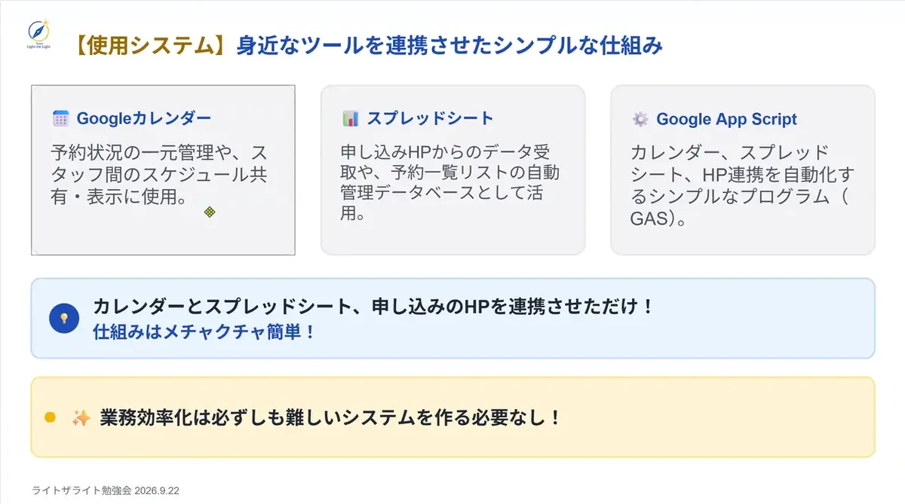
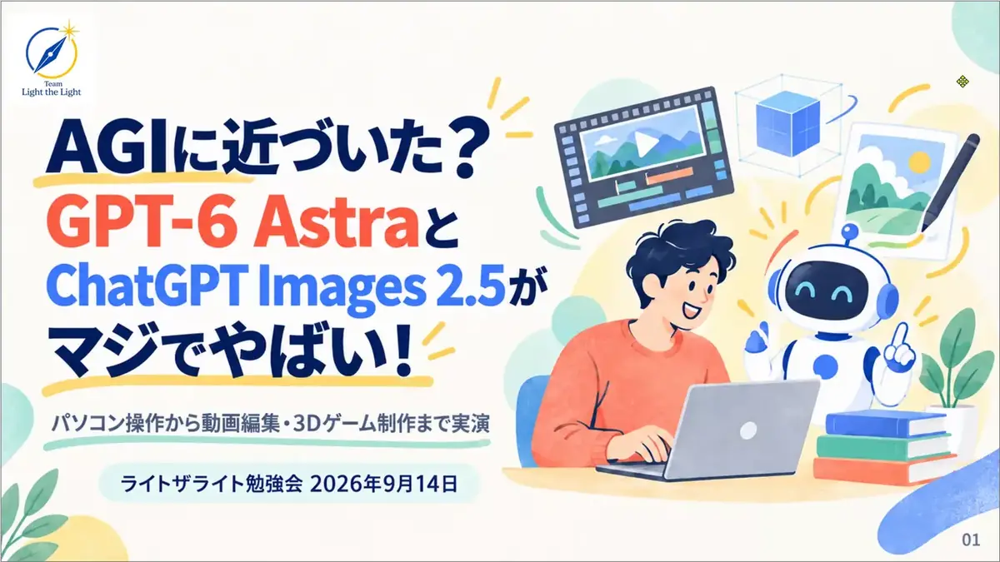
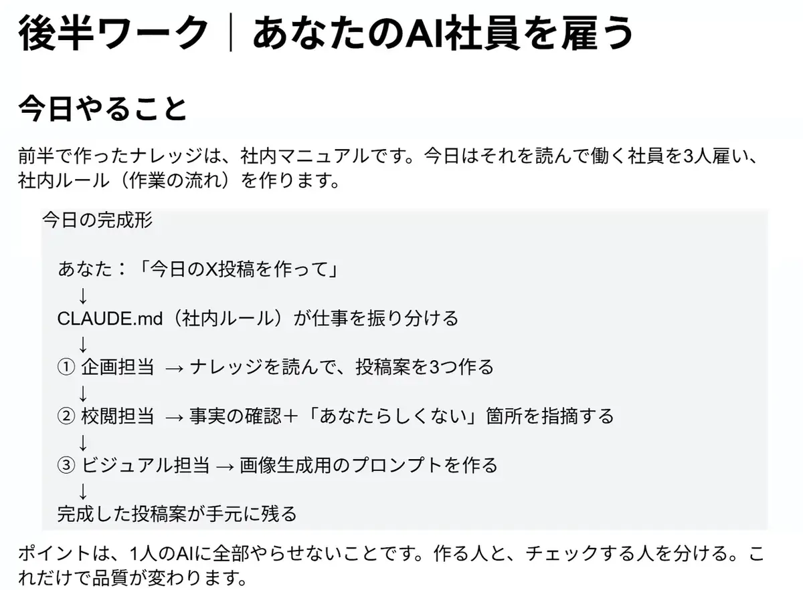
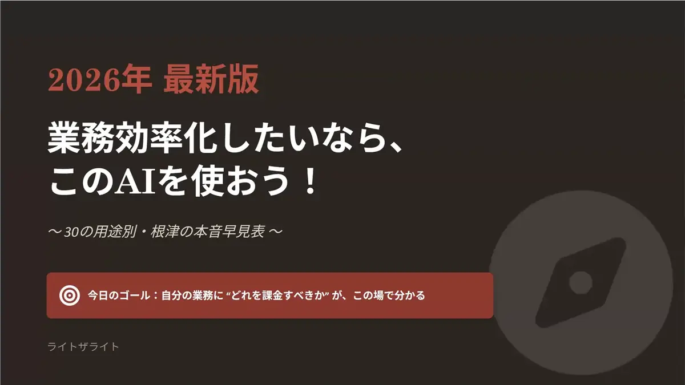
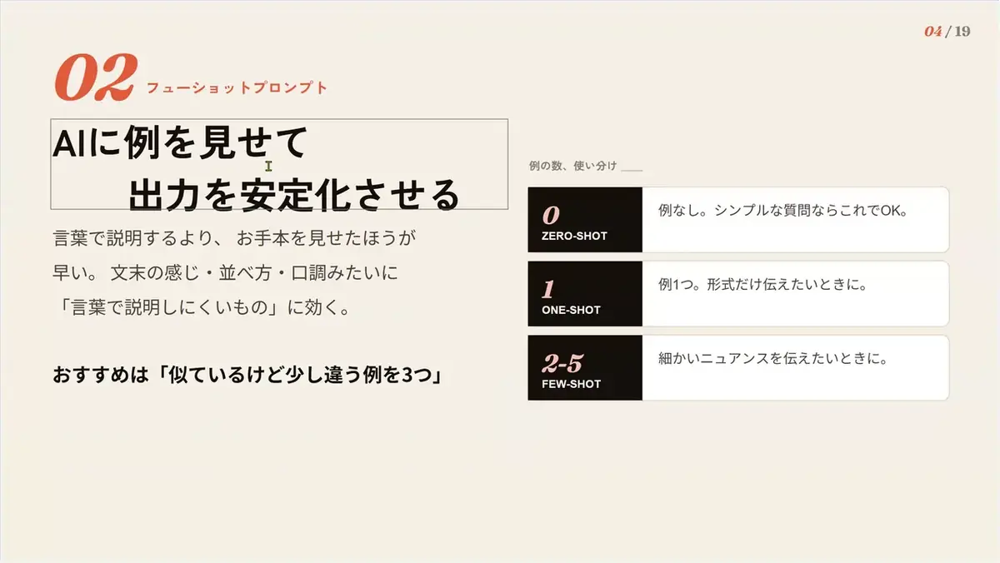

月2回のZoomグループコンサル
少人数のAIコミュニティ
AIは、使い始めた。
でも、仕事で
どう使う？
使い方も、学び方も、ひとりで迷わない。
仲間と一緒に試して、
自分の仕事での使い方をその場で聞ける。
- 月2回平日21:25〜約90分・Zoom
- 月5,500円から・単月から参加OK
- 定員20名顔の見える少人数制
＼「自分の仕事ではどう使う？」から相談できます ／
LINE登録時の決済はありません。
写真はイメージです
使い始めた人の、3つの壁
開いては、みた。
でも、その先で
止まっている。
- 壁 1
使い方が、自己流のまま。
文章の手直しや要約はできる。でも、自分の仕事のどこに使えば成果が変わるのかが見えない。
- 壁 2
学び方が、わからない。
動画も記事も山ほどある。何を、どの順で学べば仕事につながるのかを決められない。
- 壁 3
聞ける相手が、いない。
つまずいても、誰に聞けばいいかわからない。忙しい日が続くと、そのまま止まってしまう。
ライトザライトは、使い始めた人が「仕事で使える」まで進むための、月2回の勉強会と仲間の場です。
- その場で一緒に手を動かして試すその回のテーマを、画面を見ながら全員で
- 持ち寄って自分の仕事での使い方を相談する引っかかった所も、その場で聞ける
- あとから録画で見直す・Slackで聞く参加できない日も、アーカイブで
勉強会の中身
実際の勉強会を、
のぞいてみる。
最近のテーマと、当日の画面を1枚ずつ。
くわしい内容は、noteのレポートで読めます。


〇〇の業務効率化といえばこのAIツール
30の用途ごとに、どのAIに課金するかを整理した回

第3回プロンプト筋トレ
AIへの頼み方（プロンプト）を、全員で手を動かして磨いた回

画面は実際の勉強会の録画から切り出しています。参加者の映像・名前などは写らないようにしています。
このくらいの内容を、月2回。
自分に合うか、まずは聞いてみてください。
＼ どの回から見ればいいかも相談できます ／
参加についてLINEで相談する参加の目安
AIを使い始めた方の
ための場所です。
勉強会は、AIを少しでも使ったことがある前提で進みます。
入会してから「ついていけない」とならないよう、先にお伝えします。
向いている方
- ChatGPTなどのAIを、使い始めている
- 本業や副業の仕事に、AIを活かしたい
- 仲間の実践から学び、自分の実践も持ち寄りたい
向いていない方
- AIをまだ一度も使ったことがないまずは無料の範囲で触ってみてからが近道です
- 動画教材を、一人で見るだけで進めたい
- 案件や収入の保証を求めている
グルコンの進め方
月2回、Zoomで
一緒に試して、相談する。
ライトザライトの中心は、月2回のZoomグループコンサル（グルコン）。講義を聞くだけでなく、その回のテーマを一緒に手を動かして試し、自分の仕事での使い方を相談します。
開催月2回曜日は固定しません
時間21:25〜平日の夜・1回 約90分
場所Zoom欠席した日はアーカイブで・質問はSlackでいつでも
01 — みんなで学ぶ
一人の「わからない」が、
みんなの学びになる。
その回のテーマ（プロンプトの作り方、業務効率化のツール、Claude Codeなど）を一緒に試し、引っかかった所はその場で持ち寄ります。仲間の相談からも「そんな使い方があったんだ」という発見が生まれます。
- 使っていて引っかかった所を、その場で相談
- 仲間の悩みを、自分の仕事に置き換えて考える
- 学んだことを持ち帰り、次の日に試す
「自分の仕事ではどう使う？」という相談から始められます。
02 — 実践を共有する
できたことも、困ったことも。
持ち寄るほど、学びは広がる。
「この作業にAIを使ってみた」「ここでうまくいかなかった」。それぞれの仕事や経験を共有し、自分だけでは思いつかなかった活用法に出会います。
- メンバーの活用事例や試行錯誤を共有
- 職種の違う仲間から、新しい視点をもらう
- グルコンの合間も、Slackで質問・実践報告
完成した成果だけでなく、試している途中の気づきも学びのきっかけに。
03 — 仲間と、仕事へ
学ぶ仲間から、
一緒に仕事をする仲間へ。
自分の業務の時短から、提案やAI活用支援への挑戦へ。ライトザライトは、学んだ先も一緒に進む「事業者チーム」です。
- 本業・副業でのAIの活かし方を相談
- 交流会や経理の仕訳会でも、仕事の悩みを持ち寄れる
- チーム内の受発注やAI活用支援の機会へ
仕事の受注や収入を保証するものではありません。経験や取り組みに応じて、目指すことを広げていきます。
AIを仕事に活かす機会は、広がっています
企業の生成AI活用には、専門人材やノウハウの不足という課題があります。現場の仕事を理解し、AIを使って改善できる力が求められています。
出典：帝国データバンク「生成AIに関する企業の動向調査（2026年3月）」勉強会の合間
欠席した日は録画で。
質問はSlackで。
過去アーカイブ＋おすすめ視聴案内
予習・復習や、参加できない日の学習に。どの回から見るか迷ったら、おすすめ視聴案内を参考に進められます。
Slackで質問・交流
Slackは質問や交流に使うチャットツール。試してみたことや疑問を共有し、次のグルコンにつなげられます。
メンバーの声
少しずつ「できた」が、
増えていく。
20代から60代まで、さまざまな仕事の仲間が参加。
メンバーに起きている変化をご紹介します。
NotebookLMの活用方法が分かり、セミナー資料作成時間が1/10になりました。ここまで効率が上がるとは想像していませんでした。※個人の実例です。成果を保証するものではありません。
AIの使い方に迷いがなくなり、作業時間が1/3になりました。本業の整体に集中できる時間が増えて、本当に助かっています。※個人の実例です。成果を保証するものではありません。
60代でついていけるか不安でしたが、丁寧な伴走のおかげでしっかりついていけています。個別面談で疑問を解消できるので、置いてかれることなく進められています。
在籍メンバーの実例を、ご本人の了承を得て運営が選んで掲載しています。成果には個人差があり、同じ結果を保証するものではありません。
自分の仕事でも、活かせそう。
そう思ったら、まずはご相談ください。
＼「自分の場合は？」も聞けます ／
参加についてLINEで相談する運営者
進行役は、
現役のAIスクール講師。

根津 仁志 サスケ
AIコンサル・講師・Webマーケター
AIを使い始めても、実務や収益につながらず迷ってしまう。そんな悩みを、現場で何度も見てきました。
だから、質問できる相手と、実践を共有できる仲間がいる場所を。一人ひとりの学びを、チームで価値を届ける活動へつなげていきます。
- 現役AIスクール講師／400名以上の受講生を指導
- 法人向けAI研修・AI導入支援／社員100名以上の企業を含む数社
- AIセミナー登壇10回以上（Peatixほか）
- 法人経理担当／元会計事務所勤務
- Webマーケター／YouTube登録者 約2万人
- 経営者としての実務経験あり
料金
基本は、月5,500円の
コミュニティ。
みんなで学ぶグルコンと、日々の共有が基本です。
自分の課題を深めたい方は、個別面談を追加できます。
基本のプラン
コミュニティ
月2回のグルコンで学び合い、
仲間と実践・仕事につなげる。
¥5,500 / 月（税込）
＼ 定員20名・残り5名（10月25日現在） ／
このプランをLINEで相談するLINE登録時の決済はありません。
- 月2回のグルコン（Zoom）平日21時25分から約90分
- SlackでAIに関する質問し放題
- AI基礎講座・過去アーカイブ見放題
- メンバー同士の仕事の受発注機会
ほかに含まれるもの（3つ）
- おすすめ視聴案内
- AI最新情報・メンバーの実践共有
- 仕訳会・交流会への参加不定期開催
個別Zoom面談は含まれません。AIツールの有料機能の利用料は別途です。
個別に一緒に進めたい方へ
コミュニティ＋月4回の個別面談スタンダード
月2回のグルコンに、
各50分の個別Zoom面談を月4回追加。
¥21,500 / 月（税込）
面談付きプランを相談するLINE登録時の決済はありません。
- コミュニティの内容すべて
- 月4回・各50分の個別Zoom面談
- AIの基本操作・仕事への活用を相談
ほかに相談できること（2つ）
- PC操作・経理・マーケティングの相談
- AIコンサルとしての活動支援案件の取り方・提案の作り方など
個別面談は1回あたり4,000円相当。月額21,500円からコミュニティ相当額5,500円を差し引き、4回で計算。AIツールの有料機能の利用料は別途です。
ほかの参加方法も見る月2回の個別面談・面談のみ・単発相談
ライト
月14,500円（税込）
コミュニティ＋個別面談月2回
1回50分／面談1回4,500円相当
ベーシック
月22,000円（税込）
個別面談月4回・各50分
コミュニティは含まれません
単発面談
1回6,000円（税込）
個別面談1回・50分
まず一つの課題を相談したい方へ
どのプランも、AIツールの有料機能の利用料は別途です。
単月から参加OK。最低利用期間・違約金はありません。
お支払いはStripeを利用したクレジットカード決済です。初回は入会手続きのとき、2回目からは毎月26日〜30日の間に翌月分を自動で決済します。
解約は希望月の25日までにLINEまたはSlackでご連絡ください。翌月分以降の請求は発生しません。当月末まで利用でき、日割り返金はありません。
AIツールの有料機能を使う場合、その利用料は別途必要です。
少人数で、相談しやすい場を。
定員20名。募集状況はLINEでもご確認いただけます。
在籍15名／残り5名募集状況の更新日：2026年10月25日
コミュニティ参加時には「根津式SEO AIライティングプロンプト最新版」も利用できます。
参加の流れ
まずは、相談から。
内容を確かめて、納得してからご参加ください。
- 01
LINEで相談・詳細確認
使っているAIや、仕事で困っていることをお聞かせください。この段階で決済はありません。
- 02
プランを選び、入会手続き
内容をご確認いただき、ご入会の意思が固まってからお手続きへ進みます。
- 03
仲間とつながり、グルコンへ
Slackに参加し、開催案内を確認。グルコンで疑問や実践を持ち寄り、合間はアーカイブでも学べます。
ChatGPTなどのAIを使い始めている方が対象です。勉強会は、AIを少しでも使ったことがある前提で進みます。「使ってはいるけれど、仕事でどう使えばいいかわからない」という段階の方にちょうどよい場です。まだ一度も触ったことがない方は、まず無料の範囲で使ってみてから、LINEでご相談ください。個別面談付きプランでは、基本操作から相談できます。
入会後、おすすめ視聴案内をご確認いただけます。案内を参考に、興味や目的に合わせて実践のアーカイブへ進めます。すべての動画を一度に見る必要はありません。
はい。学習中の疑問はSlackで質問できます。試した内容や困っているところをお聞かせください。月2回のグルコンでも相談でき、個別に進めたい場合は面談付きプランをご利用いただけます。
基本的な使い方やAIへの頼み方は、無料で利用できる範囲から学び始められます。取り組む講座や利用する機能によっては、有料プランや別途利用料が必要になる場合があります。AIツールの料金は会費に含まれません。必要な環境は学びたい内容に合わせてご相談ください。
月2回、平日の夜21時25分から約90分、Zoomでオンライン開催します。AIの使い方や実践中の疑問、仕事への活かし方などを相談できます。固定の曜日ではありません。
はい。勉強会はアーカイブで視聴できるため、ご都合のよい時間に学べます。おすすめ視聴案内を参考に、自分のペースで進めていただけます。
コミュニティは月5,500円（税込）で、月2回のグルコン・Slackでの質問や実践共有・アーカイブ・視聴案内などを利用できます。面談付きプランは個別Zoomで自分の課題を相談する時間が加わります。ライトは月2回、スタンダードは月4回、各50分の面談です。
Slackは、質問や交流に使うチャットツールです。招待後に使い方をご案内します。AIに関する質問、実践報告、情報共有、案件相談などに利用します。
はい、会社員の方も参加できます。AIを使い始めた方から実務で使っている方まで、20代〜60代のWebライター・広報PR・整体師・Webディレクターなど、さまざまな方が在籍しています。今の仕事にAIを活かしたい方や、副業・将来の独立を考えている方もご参加いただけます。
AIを学び、仲間と実践を共有し、仕事にもつなげていく「事業者チーム」として活動する点です。チーム内の受発注や、AI活用支援への挑戦など、学んだ先の活動も目指しています。
資料作成時間の短縮や、AI案件の獲得、本業でAI研修を担当するようになった事例があります。成果は経験や取り組みによって異なり、同じ結果や仕事の受注を保証するものではありません。
LINEで詳細をご確認いただき、入会を決めてからお手続きへ進みます。お支払いはStripeを利用したクレジットカード決済です。初回は入会手続きのとき、2回目からは毎月26日〜30日の間に、翌月分が自動で決済されます。入会後にSlackへご招待します。
最低利用期間・違約金はありません。解約をご希望の月の25日までにLINEまたはSlackでご連絡ください。翌月分以降の請求は発生しません。当月末日まで利用でき、日割り返金はありません。詳しくは特定商取引法に基づく表記をご確認ください。
Let's light your next step.
次の一歩は、
仲間と一緒に。
使い始めたAIを、仕事にどう活かすか。
迷っている今のうちに、話してみてください。